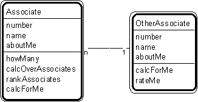

Patt#12. "Associate - Other Associate" Pattern // transaction patterns

Typical object interactions
- howMany --> calcForMe
- calcOverOtherAssociates --> calcForMe
- rankOtherAssociates --> rateMe
Examples
- aileron-gyro; aircraft-runway; building-sensor; driver-vehicle; loading dock - order; order-tote; truck - loading dock.
Combinations
- any other pattern.
Notes
- Associates are objects that know each other, without a need for information about that association or history about it.
- In some pattern instances, an "other associate" may need to know some number of associates.
Related strategy: Str#18. "Select Associates"